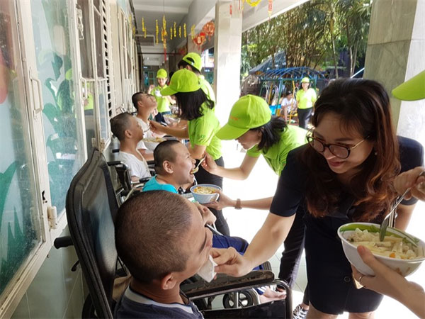

<section id="myproject"> 
    <div class="row" id="mycommunityproject">
                <h3>My latest projects:</h3>
                <div class="main-body-menu">
                <div>Tro Ngheo Vung Cao</div>
                <div>Com co thit</div>
                <div>Com co thit</div>
                <div>Com co thit</div>
                <div>Com co thit</div>                
                </div>
                
            <div class="column">
                <h1><i class="fa fa-universal-access"></i>My charity project</h1>
                <div class="newspaper">
                        <p>HÀ NỘI — With more than 15 years volunteering for charity projects, Nguyễn Tuấn Khởi, 34, from HCM City, said he has witnessed hunger first-hand.
                        However, during many trips across Việt Nam, he also found so much food being wasted every day in the country.
                        “The idea providing food, which might otherwise be wasted, to those who really need it, inspired me to set up a project helping improve the living conditions of many hungry people,” said Khởi.
                        From this desire, the non-profit Foodbank Vietnam was born.
                        With the support of the government-sponsored Vietnam Red Cross (VCRC), Foodbank Vietnam debuted earlier this year with a pledge to reduce poverty; raise social awareness about saving food; as well as boost connections and coordination between food suppliers and resource centres with charity shelters and organisations for poor and disadvantaged people, project founder Khởi explained to Việt Nam News.
                        After just seven months, the project based on Nơ Trang Long Street, in HCM City’s Bình Thạnh District, has donated food to 10 charity shelters in the city.
                        “More than 5,000 meals are provided each month to 10 places sheltering the homeless, many of them children. We have gradually collected the food from five suppliers in HCM City,” according to Khởi.
                        The project’s slogan is “For a sharing Việt Nam”, and it leans on the support of more than 100 volunteers. The aim is not just to distribute food for the poor in the city, but also to those who face difficulty circumstances in the region, particularly those in mountainous and remote areas.
                        “Our aim is to do something to eradicate hunger in the country and to establish a large food bank in Việt Nam to provide long-term sustenance for those in need, contributing to social security,” Khởi said.
                        From August this year, Foodbank will start to contact at least 100 food stores and a wholesale market in order to receive expired food that is unable to be sold.
                        </p>
                        
                </div>
            <div>
    
            <h1><i class="fa fa-thumbs-o-up"></i>SUPPORT ME!</h1>
            <div class="column">                
                <div id="img1" class="mySlides myPix"></div>
                <div id="img2" class="mySlides myPix"></div>
                <div id="img3" class="mySlides myPix"></div>

                <div  class="myPix"></div>


                <div style="text-align:center">
                    <span class="dot" onclick="showSlides('img1','myPix')"></span>
                    <span class="dot" onclick="showSlides('img2','myPix')"></span>
                    <span class="dot" onclick="showSlides('img3','myPix')"></span>
                </div>                
            </div> 
        </div>
        <div class="row">
        <div class="column">            
                <div class="newspaper">                
                 <p>Between 33-50% of all food produced globally is never eaten, and the value of this wasted food is worth over $1 trillion. 
                 To put that in perspective, in the USA food waste represents 1.3% of the total GDP. Food waste is a massive market
                 inefficiency, the kind of which does not persist in other industries. It’s easy for many people to dismiss food waste as 
                 someone else’s problem (“I don’t waste any food”) or to focus solely on the more visibly shocking examples of waste (unharvested fields of produce ploughed back into the earth, supermarket
                 skip waste)<br></p>
                </div>
        </div>       
    </div>

    
            <h1><i class="fa fa-group"></i> My Team </h1>        
            <div class="team">
            
            <member>
                    
                    <div><p class="center" style="font-weight: bold; color: Blue;">Andy Dang - Project Leader</p></div>
                    <div><p class="center">Andy Dang is the owner of this project who is taking the lead
                    from  condcuting survey, interview, field visit... and be resposible for the contains of this site. I am thriving to do charity project that focuses on improving life at rural</p></div>
                    <div><p class="center" style="font-size: 1.5em"><i style="padding: 0px 15px;" class="fa fa-facebook-official">
                    </i><i style="padding: 0px 15px;" class="fa fa-instagram"></i><i style="padding: 0px 15px;" class="fa fa-twitter"></i></p></div>
            </member>
            <member>    
                     
                    <div><p class="center" style="font-weight: bold; color: Blue;">Selena Gomes - Co-Leader</p></div>
                    <div><p class="center">Aenean tortor est, vulputate quis leo in, vehicula rhoncus lacus. Praesent 
                    aliquam in tellus eu gravida. Aliquam varius finibus est, et interdum justo suscipit id. Etiam dictum feugiat tellus, a semper massa.</p></div>
                    <div><p class="center" style="font-size: 1.5em"><i style="padding: 0px 15px;" class="fa fa-facebook-official"></i>
                    <i style="padding: 0px 15px;" class="fa fa-instagram"></i><i style="padding: 0px 15px;" class="fa fa-twitter"></i></p></div>
            </member>
            <member>     
                    
                    <div><p class="center" style="font-weight: bold; color: Blue;">Obama - Member</p></div>
                    <div><p class="center">Barack Obama gave away more than $1 million while he was President of the United States, 
                    more than half of which went to charities supporting children, according to a Forbes analysis of his tax returns from 2009 to 2015</p></div>
                    <div><p class="center" style="font-size: 1.5em"><i style="padding: 0px 15px;" class="fa fa-facebook-official">
                    </i><i style="padding: 0px 15px;" class="fa fa-instagram"></i><i style="padding: 0px 15px;" class="fa fa-twitter"></i></p></div>
            </member>
            
            </div>
    
</section>